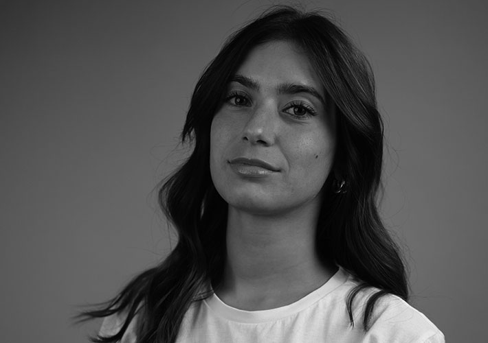
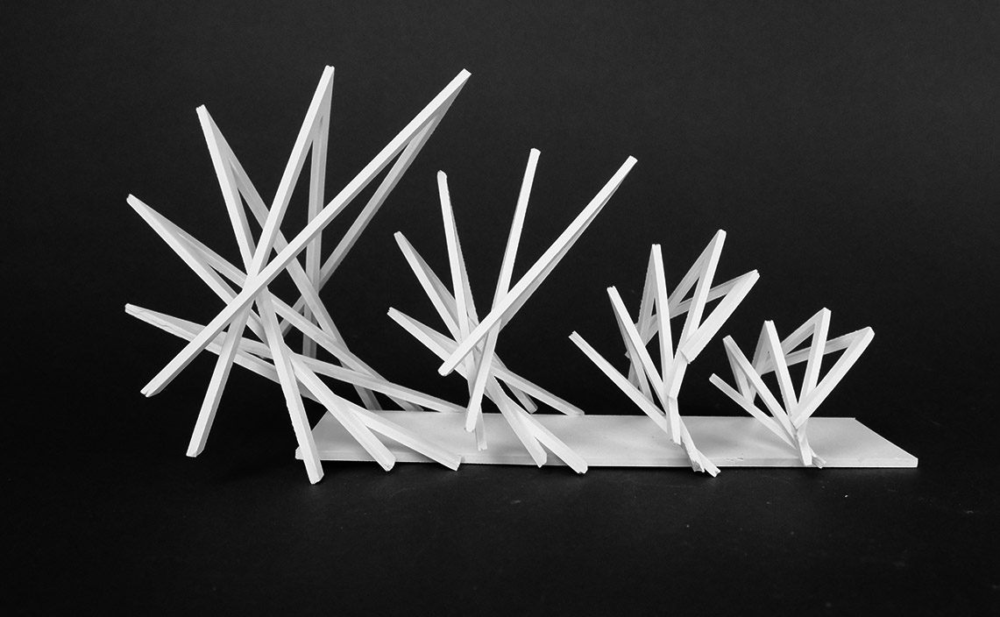

STAVOLA ANGELICA PORTFOLIO

MI PRESENTO
Sono Angelica, una studentessa di design appassionata di creatività e innovazione. Perfeziono costantemente le mie competenzenel design grafico, nel design del prodotto, nell'UX/UI design e nel design della comunicazione. Ritengo che la vera essenza del design risieda nella capacità di risolvere problemi e creare esperienze emotive.
I MIEI PROGETTI

AVA
Questa scultura geometrica presenta un'interazione tra forme triangolari e lineari, creando un effetto dinamico e tridimensionale. Le intersezioni e sovrapposizioni degli elementi offrono un senso di equilibrio e connessione, invitando l'osservatore a considerare la complessità della composizione. L'opera invita a riflettere sul concetto di consapevolezza. Le trasformazioni della forma prismatica rappresentano il percorso di crescita personale, suggerendo come la consapevolezza può aiutarci a gestire le difficoltà quotidiane. Attraverso questa rappresentazione astratta, intendo comunicare un messaggio di speranza e resilienza, evidenziando come la consapevolezza possa trasformare le sfide in opportunità di sviluppo personale.